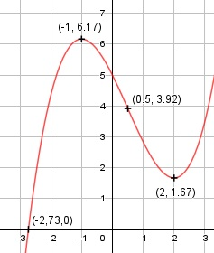

Aufgabe 41 f(x) = (1/3)x3 - 0,5x2 - 2x + 5 f'(x) = x2 - x - 2, f''(x) = 2x - 1, f'''(x) = 2 Definitionsbereich: -∞ < x < ∞ Wertebereich: -∞ < f(x) < ∞ Asymptoten: - Symmetrie: - Nullstellen: (1/3)x3 - 0,5x2 - 2x + 5 = 0 Wertetabelle: -4 -3 -2 -1 0 1 2 -16,3 -2,5 4,33 6,17 5 2,83 1,67 3 4 5 3,5 10,33 24,17 Vorzeichenwechsel zwischen -3 und -2 --> Nullstelle gewählt x01 = -2,6, Newtonsches Näherungsverfahren: f(x0) x1 = x0 - ------- f'(x0) (1/3)*(-2,6)3-0,5*(-2,6)2-2*(-2,6)+5 x1 = -2,6 - -------------------------------------- (-2,6)2 - (-2,6) - 2 x1 = -2,6 - 0,13 = - 2,73 N1(-2,73|0) Schnittpunkt mit der y-Achse: f(0) = (1/3)* 03 - 0,5 * 02 - 2 * 0 + 5 = 5 Sy(0|5) Extrempunkte: x2 - x - 2 = 0 p, q - Formel: p = -1, q = -2 x1,2 = x1,2 = 0,5 ± x1,2 = 0,5 ± x1,2 = 0,5 ± 1,5 x1 = 2, f(2) = (1/3) * 23 - 0,5 * 22 - 2 * 2 + 5 = 1,67 x2 = -1, f(-1) = (1/3) * (-1)3 - 0,5 * (-1)2 - - 2 * (-1) + 5 = 6,17 f''(2) = 2 * 2 - 1 > 0 --> Tiefpunkt (2|1,67) f''(-1) = 1 * (-1) - 1 < 0 --> Hochpunkt (-1|6,17) Wendepunkte: 2x - 1 = 0 |+1 2x = 1| :2 x = 0,5, f(0,5) = (1/3)* (0,5)3 - 0,5 * (0,5)2 - - 2 * 0,5 + 5 = 3,92, f'''(0,5) ≠ 0 --> Wendepunkt (0,5|3,92) Graph:
